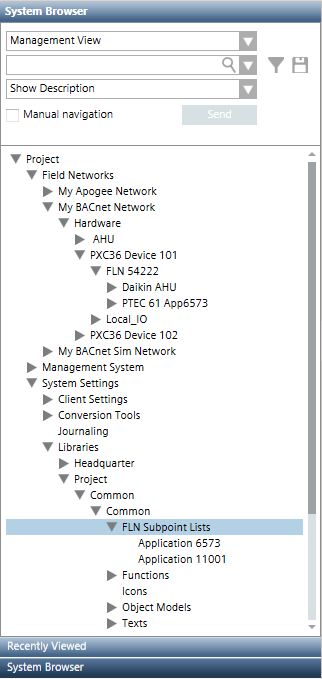
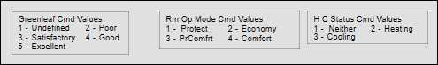
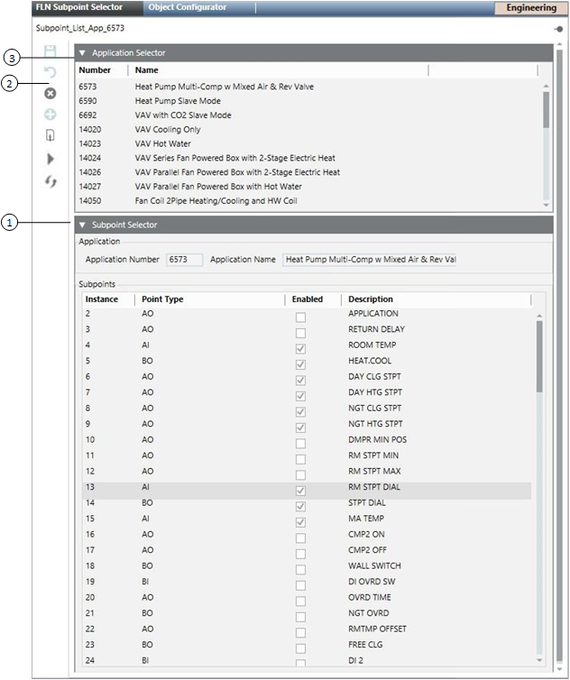

APOGEE FLN Subpoint Selector

NOTE:
Information about TEC subpoints applies to BACnet objects only. During an export of APOGEE objects, the system always provides subpoints.
Overview
The primary purpose of the FLN Subpoint Selector is to allow you to enable or disable subpoints for TEC applications. These subpoints are either:
- Imported by Desigo CC through files created by the Desigo CC Export Utility in Insight software or in the Commissioning Tool, or
- Discovered by Desigo CC through the system's Discovery feature, which detects devices already on the network.
The Export Utility exports only pre-defined subpoints in a TEC. TEC subpoints that are not pre-defined will not display in your panels. So, if you want them to display in the management station, you must add them in the Commissioning Tool’s System Profile application before you create the export files. This allows the subpoints to display as TEC subpoints in your panels, and these subpoints can then be trended, and so on.
The FLN Subpoint Selector also allows you to create default Functions for BACnet TEC applications that are not present in the library. The default Function can then be configured appropriately.
FLN Subpoint Lists
The following screen shot shows the location of FLN Subpoint Lists, which is highlighted. Clicking this node while in Engineering mode displays the FLN Subpoint Selector in the Primary pane.

P1DXR Considerations
Because the P1 communication protocol does not support multi-state values, multi-state points in P1DXR devices are represented as analog points in Extended Operations. However, the P1DXR graphic templates included with the APOGEE_BACnet_TEC extension module allow the correct state text for multi-state points to display. These templates contain a legend showing proper command values for the analog to multi-state mapping—for example:

Here are some additional considerations:
- P1DXR application numbers must not match existing standard DXR application numbers.
- If the P1DXR is attached to an Apogee P2 panel, then a custom function and object model will be generated automatically, but you will still need to assign the P1DXR template graphic to the function.
- You cannot use the same application number for P1DXR for both Apogee P2 and Apogee BACnet integration. If identical P1DXRs are connected to both Apogee P2 and Apogee BACnet, they must use different application numbers.
FLN Subpoint Selector Workspace

Item | Description |
1 | Subpoint Selector |
2 | FLN Subpoint Selector Toolbar
|
3 | Application Selector |
Default Function Content
The following are included in the default Function:
- AI
- AO
- AV
- BI
- BO
- BV
- MI
- MV
- MO
- Unit text are read from the subpoint, and TxG_EngineeringUnits can be configured.
- Active and Inactive Text are read from the subpoint and attempted to be matched to the text group. If a match cannot be made, a default is used.
- All properties will be assigned the Status group and be included in Display Level 2. Only summary status will be included in display level 1.
- All properties will receive a “valid” display with a “default” display control and default icon from the global base library for representing status properties.